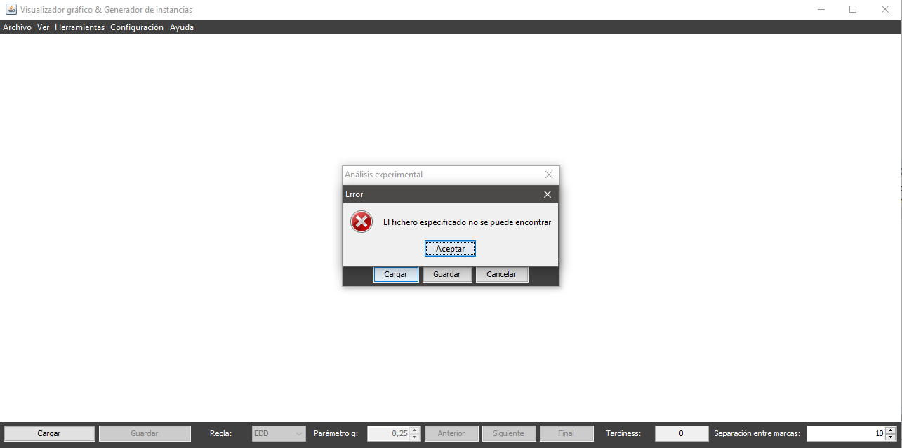
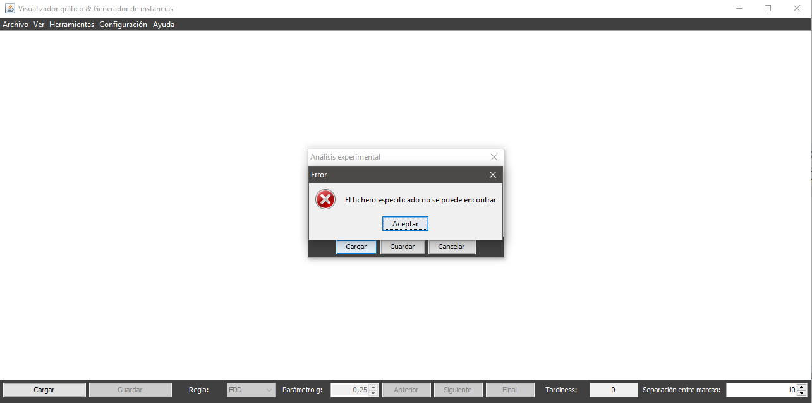

Una vez se accede al diálogo de análisis experimental, para hacer dicho análisis desde fichero es necesario disponer de un archivo con el formato adecuado:
N:X
T:Y0,Y1,Y2…
C:Z0,Z1,Z2…
Cada una de las filas representa un parámetro para la realización del análisis, seguido de : y uno o varios números separados por ,:
Con un fichero de análisis correcto preparado solo es necesario pulsar el botón Cargar de la parte inferior del diálogo.
Una vez accedida a la opción se desplegará un diálogo donde el usuario podrá navegar por sus directorios y escoger el fichero a cargar. Para ello podrá:

En caso de que el fichero seleccionado no exista, tenga una extensión inválida (distinta a txt) o tenga un formato inválido se informará al usuario del error.
 


Una vez cargado el análisis se procesará (en función del número de combinaciones puede llevar varios segundos) y al terminar se desplegará un diálogo donde el usuario podrá navegar por sus directorios y escoger el nombre del fichero a guardar (no es necesario especificar la extensión, el sistema automáticamente asignará la extensión xls al archivo creado). El fichero generado podrá visualizarse con cualquier software que soporte xls.